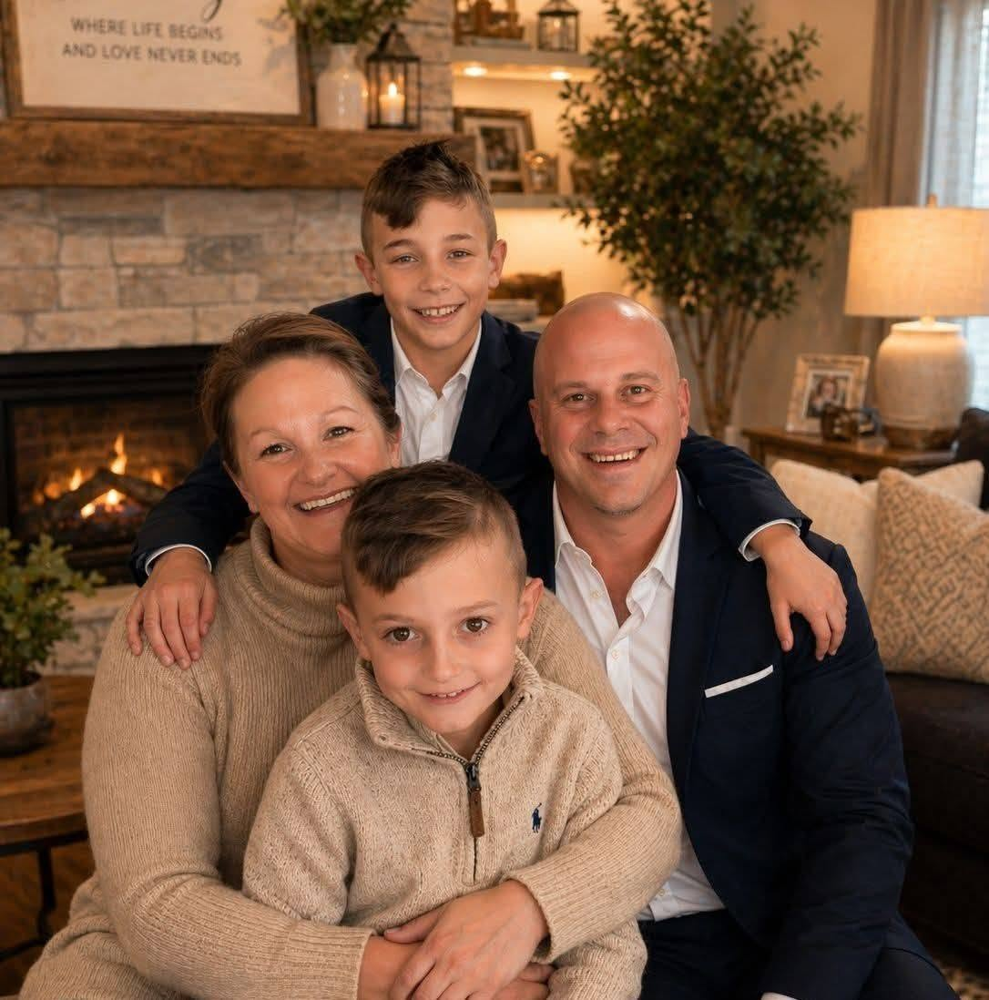
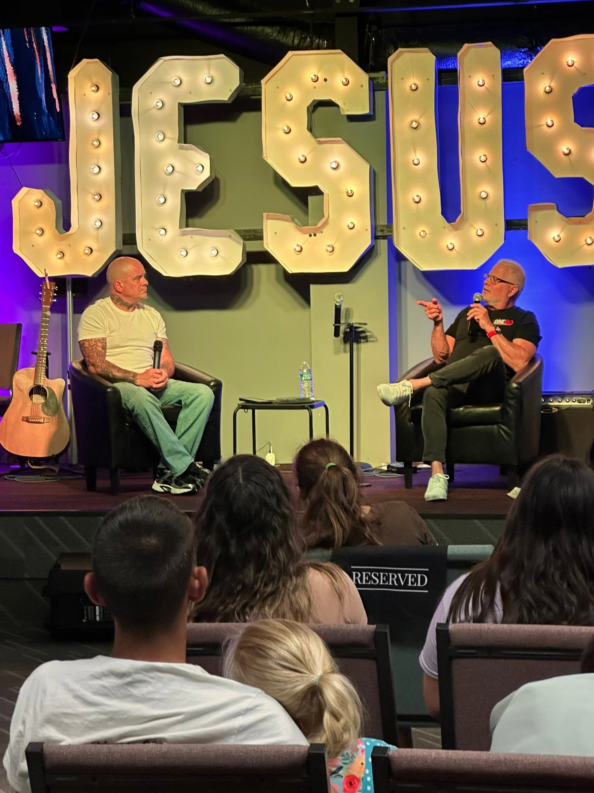
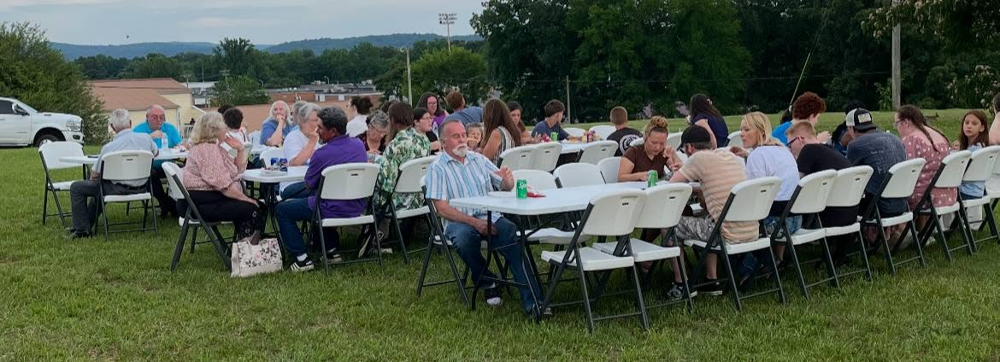
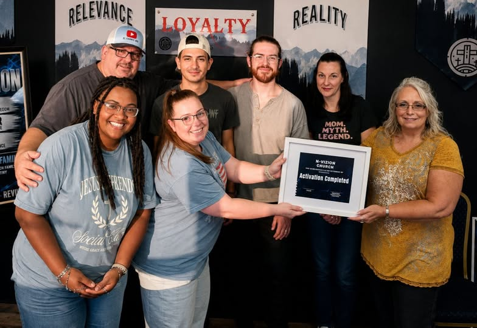

N-Vizion Church is a non-denominational body of believers in Sparta, Tennessee — built on the uncompromised Word of God and the proclamation of His Kingdom.
"Your kingdom come, your will be done, on earth as it is in heaven."
Matthew 6:10

The Bolinger Family
On behalf of our family — myself, my wife Jody, and our children — welcome to N-Vizion Church. Whether you are searching for the first time, returning after a long season away, or simply hungry for more of God, you have found a place where you are wanted, where you belong, and where the door is always open.
Our heart is for every person who walks through our doors to encounter the living God — not a religion, not a set of rules, but the person of Jesus Christ of Nazareth. We believe that a real encounter with Him changes everything: your past, your present, and your eternity.
Our ultimate goal is to make heaven our home and to spend eternity with our Lord and Savior Jesus Christ. But we also believe God never intended for His people to simply endure life until then. He calls us to a victorious, Kingdom life — here, on this earth, right now. "On earth as it is in heaven" is not just a line in a prayer. It is a promise and a commission.
If you are seeking, if you are hungry, or even if you just want to see what this is all about — come as you are. We would love to walk this journey with you.
We hold the Bible as the inspired, infallible Word of God — the final authority for how we live, think, and lead. We preach it without apology, in every season.
We believe in the death, burial, and resurrection of Jesus Christ of Nazareth — that He is the Son of God, the only path to salvation, and the Lord of all creation.
We preach the Kingdom of God — the rule and reign of Jesus here and now. We believe in a victorious, Spirit-filled life that reflects heaven on earth.
We are a family. We carry one another's burdens, celebrate each other's breakthroughs, and walk through life together — just as the early church did.
N-Vizion is not affiliated with any denomination. We are bound to Scripture alone — welcoming all who are seeking Jesus, regardless of background or tradition.
Everything we do is shaped by eternity. Our greatest goal is to make heaven our home — and to bring as many people with us as we possibly can.

Sunday at N-Vizion

Fellowship & Community
New Beginnings — Baptism

Growing Together
Join us any Sunday at 11:00 AM. You don't need to have it all figured out — just come. There is a seat for you at N-Vizion.